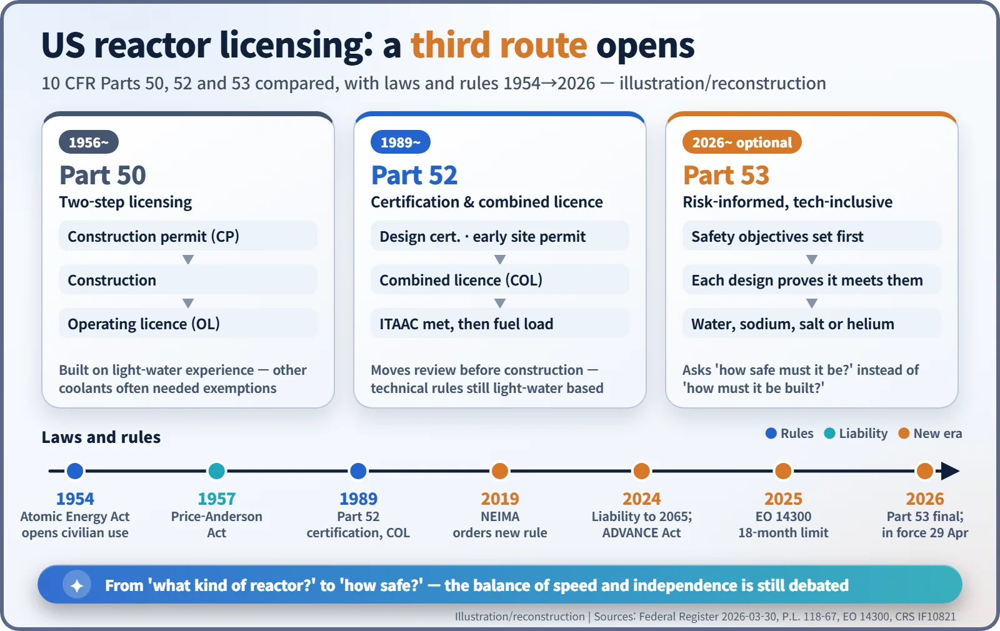

Nuclear History · 299
One Word, "Unnecessarily" — NRC Part 53, the ADVANCE Act and the Modernizing of Nuclear Rules
A new law told the US nuclear regulator not to 'unnecessarily limit' nuclear power, and a new rule changed the question from what kind of reactor to how safe it must be.
US reactor rules were written for water-cooled plants, so builders of sodium-, salt- and helium-cooled reactors had to seek exemptions clause by clause. Between 2019 and 2026 Congress, the White House and the Nuclear Regulatory Commission rewrote the rulebook: the bipartisan ADVANCE Act (2024), Executive Order 14300 (2025) and a new, optional licensing route, 10 CFR Part 53 (2026). The changes also revived an old argument about how fast a safety regulator should move and how independent it must remain.
One word in a mission statement
Sometimes the heaviest thing in a statute is a single adverb. In July 2024 the US Congress told the Nuclear Regulatory Commission (NRC) to rewrite its mission statement. Licensing and regulation, the new law said, should be efficient and should be done in a way that "does not unnecessarily limit" the civilian use of nuclear energy or the benefits it brings to society. [2]
An agency created to keep nuclear power safe had been handed a second instruction: don't stand in the way without good reason. Why Congress added that word, and the argument it started, is the subject of this story.
A suit cut for light-water reactors
The backbone of US reactor licensing is the two-step process of Part 50, which dates from the 1950s (a construction permit, then an operating licence), and the design certifications and combined licences of Part 52, added in 1989. The trouble lay in the technical requirements inside them. In its own 2026 rulemaking the NRC acknowledged that the existing requirements "were primarily developed to address license requests concerning light water-cooled reactors." [1]
So developers of advanced reactors cooled by sodium, molten salt or helium had to request exemptions wherever the rules assumed water. Think of a suit tailored for one body, handed to someone of a completely different build, with a separate alteration form for every seam that does not fit. [4]
Congress moved first. The Nuclear Energy Innovation and Modernization Act (NEIMA), signed in January 2019, told the NRC to create an optional "technology-inclusive" framework that would work for any type of reactor, and to finish it by the end of 2027.
A rare bipartisan landslide
The next step was the ADVANCE Act (the Accelerating Deployment of Versatile, Advanced Nuclear for Clean Energy Act). Senator Shelley Moore Capito (born 1953), a West Virginia Republican, introduced it on 30 March 2023 with Democratic co-sponsors including Tom Carper and Sheldon Whitehouse. It finally passed as Division B of an unrelated bill, the Fire Grants and Safety Act: 393 to 13 in the House and 88 to 2 in the Senate. President Joe Biden signed it on 9 July 2024 as Public Law 118-67, calling it "a bipartisan win for American energy security, innovation, and achieving economy-wide, net-zero emissions by 2050." [5]
The law is practical in tone. It caps review fees for advanced-reactor applicants (from 1 October 2025), offers prizes equal to the fees paid for milestones such as the first advanced-reactor licence, and sets deadlines for licensing strategies for retired coal-plant sites and for microreactor guidance. And it carries the mission-statement clause. [2]
A note on insurance
The Price-Anderson Act, which governs compensation after a nuclear accident in the US, was extended to 31 December 2065 by the Further Consolidated Appropriations Act of March 2024 (Public Law 118-47). Some online summaries credit the ADVANCE Act, but the Congressional Research Service and the text of the law point to the appropriations act. [6] Internationally, an amendment to the Convention on Supplementary Compensation for Nuclear Damage (CSC) was adopted in Vienna on 13 January 2026; as of November 2026 it has not entered into force.
An executive order and the referee's independence
On 23 May 2025 President Donald Trump signed Executive Order 14300, "Ordering the Reform of the Nuclear Regulatory Commission". It set an 18-month limit for final decisions on new reactor applications and one year for decisions on keeping existing reactors running, and ordered a "wholesale revision" of the NRC's regulations within 18 months. It also set a national goal of expanding US nuclear capacity "from approximately 100 GW in 2024 to 400 GW by 2050." [3]
Criticism was sharp. On 13 June 2025 Commissioner Christopher Hanson was removed without a stated reason. Edwin Lyman of the Union of Concerned Scientists called it an escalation of efforts to weaken the agency's independence, and a group of former NRC officials sent a letter of protest. Supporters, including industry groups, argued that slow reviews had to change. Speed and an independent referee were now in open tension. [8]
A 186-page new suit: Part 53
Meanwhile NEIMA's assignment was completed. The proposed rule was published on 31 October 2024 and drew 158 comments; some reviewers called earlier drafts so rigid as to be unusable. The NRC announced the final rule on 25 March 2026, it appeared in the Federal Register on 30 March 2026 across 186 pages, and it took effect on 29 April 2026 — more than a year ahead of NEIMA's deadline. [1] [4]
The key change is the question the rules ask. The old requirements assumed the pipes and systems of a light-water plant. Part 53 instead starts from safety objectives, such as the risk to people living nearby in an accident, and asks each design to show how it meets them. That is what its three labels mean: risk-informed, performance-based and technology-inclusive. Its title refers to "advanced reactors", yet the rule text covers "commercial nuclear plants" of any technology, size or purpose, and it is optional: Parts 50 and 52 remain available.
NRC Chairman Ho Nieh called it "really a historic milestone." As of early November 2026, however, we could not find a confirmed first application under Part 53, and some of the rule changes ordered by the executive order are scheduled into early 2027. [7]

New reactors need new rules; few people dispute that. How fast those rules should be written, and who should hold the pen, remains an open question.